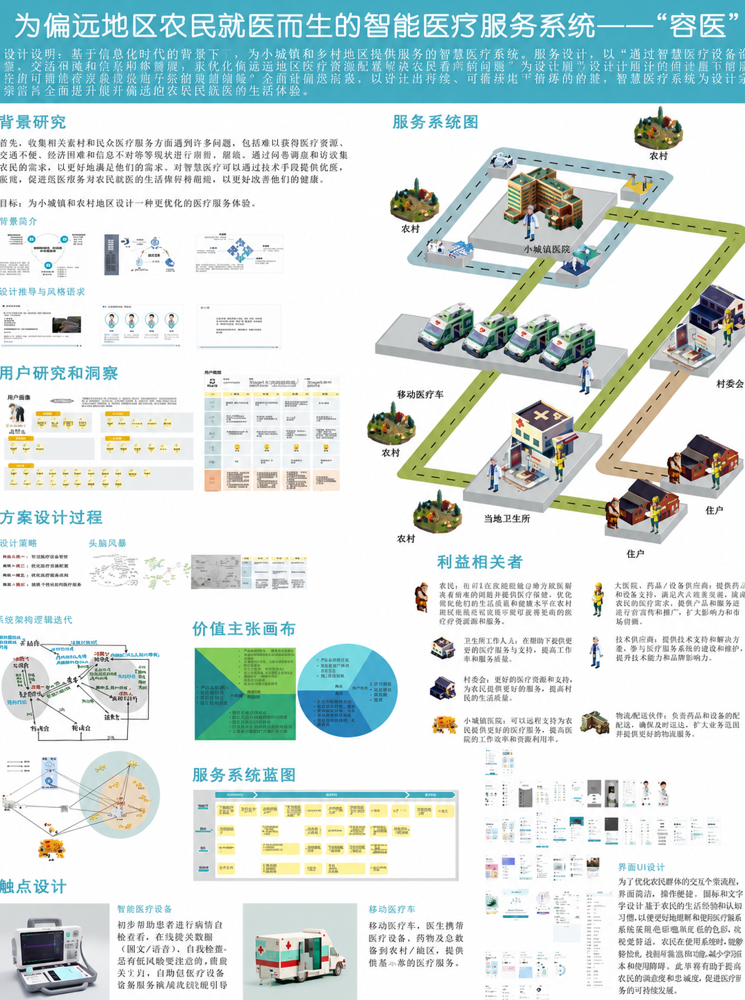
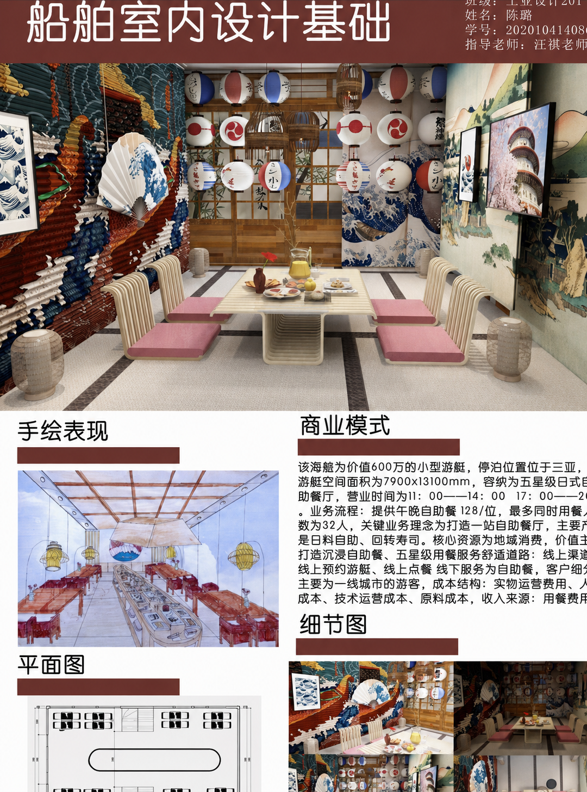
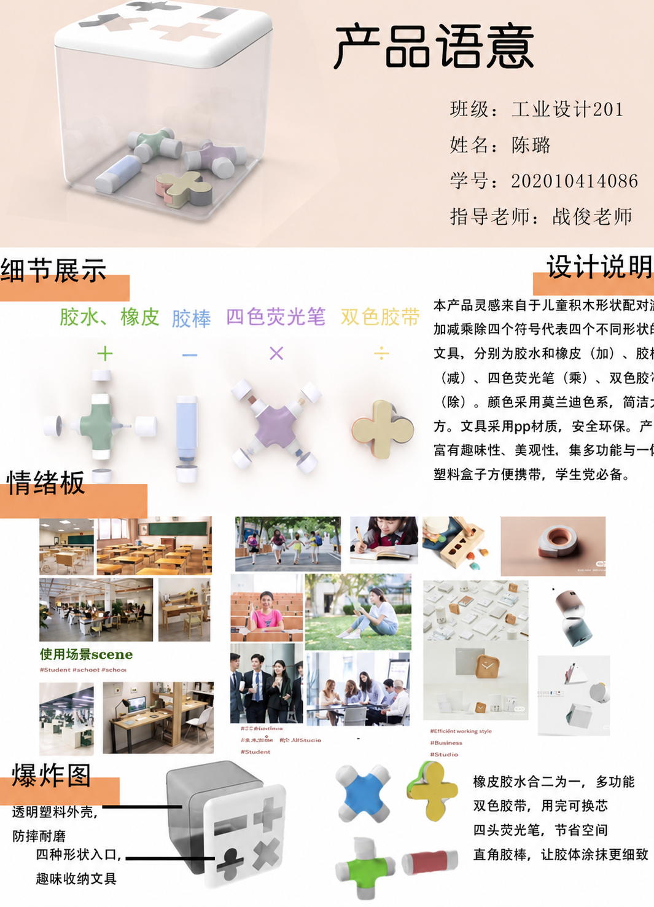
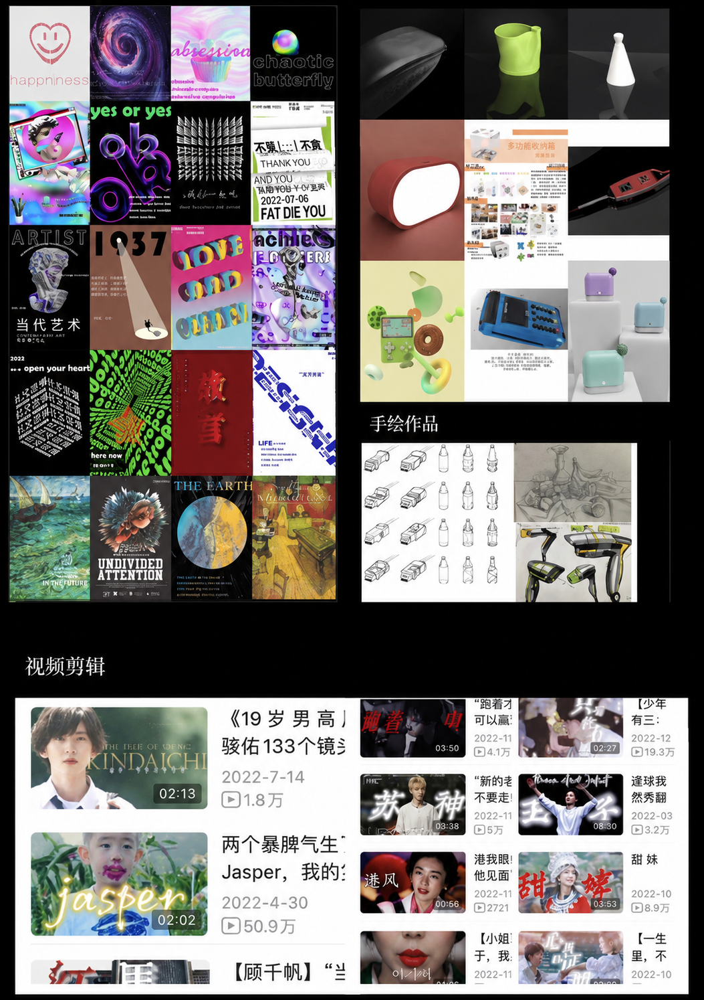

01 / PERSONAL FILE · 2026
陈 璐 · AI 创业者
& 内容创作者
一个打算先当创业公司老板、再去戛纳、最后拿茅盾文学奖的人类。
- 一只需要漂在干净水面上的草履虫
- 一台高速运转的电脑
- 一个 25 岁前额叶快速发育的人类
MOTTO / independent · curiosity · assertive · critical thinking
DRAG THE ROOM · SCROLL TO EXPLORE ↓
02
PERSONAL_LOG / EXPERIENCE
经历不是直线，
是不断切换的创作现场。
02 / OPEN LOGMEDIA
哔哩哔哩 · 影视内容创作
影视混剪、人物群像、角色解析与 AIGC 影像实验。
MEDIA
小红书 · 影视与生活方式内容
影视表达、AIGC 视频、生活 Vlog 与个人审美分享。
MEDIA
微信公众号 · AI 科技与人文内容
AI 产品测评、前沿技术观察、创业报道与人文表达。
03
DESIGN_PORTFOLIO / SELECTED WORK
设计作品集，
把观察变成方案。
03 / PORTFOLIO
SERVICE DESIGN / 01
容医
智能医疗服务系统
为偏远地区农民设计连接乡镇卫生所、医院与移动医疗车的智慧医疗服务。
SPATIAL DESIGN / 02
船舶
室内设计
以海洋文化与日式美学为灵感，打造小型游艇中的沉浸式自助餐厅。
PRODUCT DESIGN / 03
组合式多功能
文具收纳盒
把胶水、橡皮、荧光笔和胶带组合成可拆卸、可替换的模块化文具。
VISUAL PRACTICE / 04
平面设计、手绘
与视频剪辑
海报、字体与版式实验、产品表现、工业设计手绘与动态影像创作。04
OFF_THE_CLOCK / SIDE DOOR
工作之外，
我用另一种方式理解世界。
04 / PLAYGROUNDTALK TO 猫猫 / 05
要不要和
LuluBot 聊聊？
它基于公开资料整理陈璐的创业、内容、作品与研究记录；会用一点热情、一点读心术来带你逛这间小屋。
LuluBot 是资料导览与风格化回复，不代表本人实时回答。